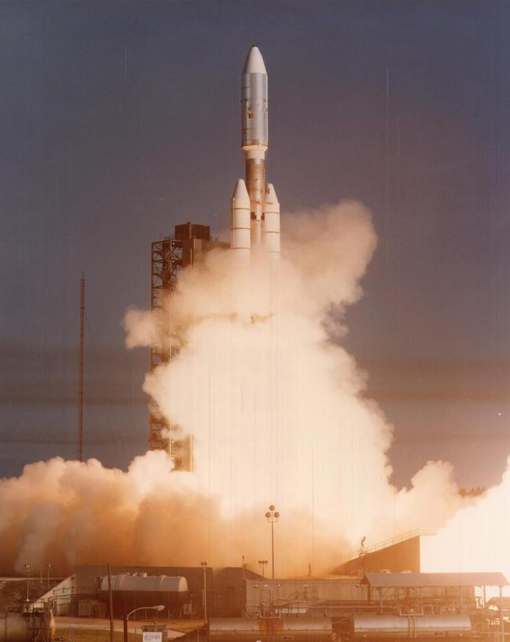
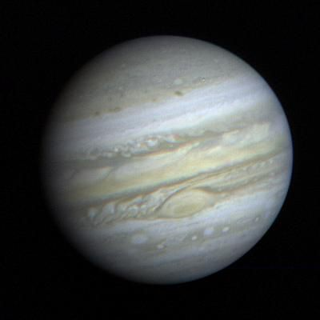
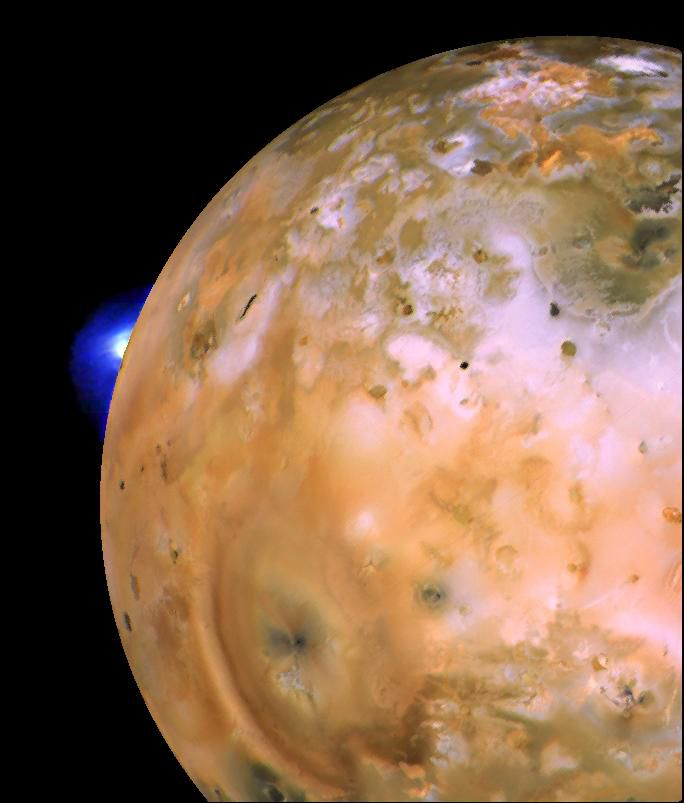
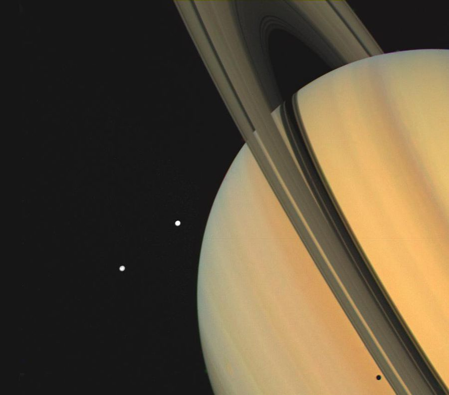
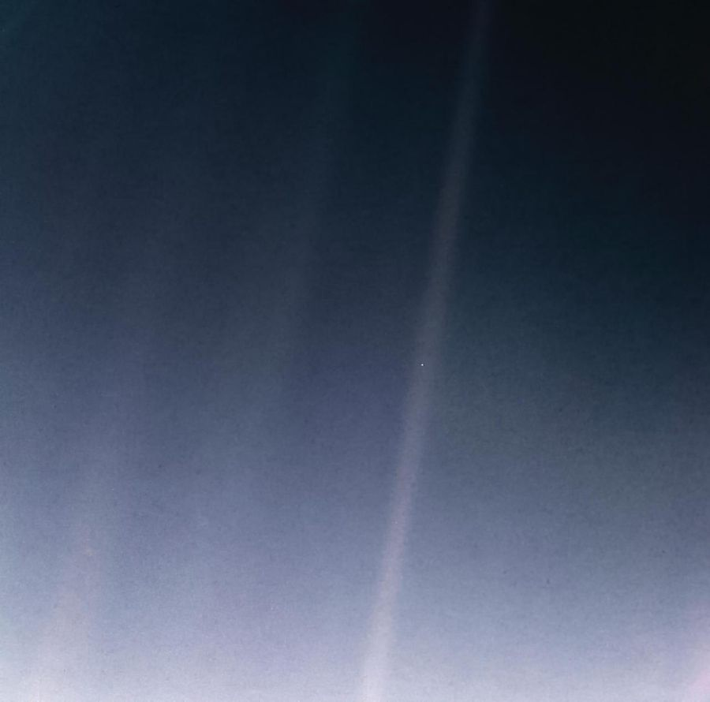
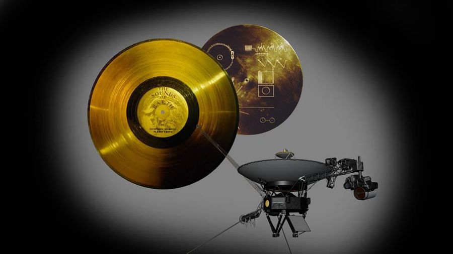

Voyager 1 is one light day from Earth
At 10:16 UTC today Voyager 1 passed 25,902,068,371 km from Earth, the distance light travels in a day (NASA). Nothing people have built has ever been this far away. A command sent to it now arrives tomorrow, and its answer comes back the day after. It left Earth 49 years ago and is still talking to us, with two instruments measuring the magnetic field and plasma waves of interstellar space.
49 years in pictures






What it did
- 5 Sep 1977Launch. Two weeks after Voyager 2, on a faster path that let it reach Jupiter and Saturn first.
- 5 Mar 1979Jupiter. Volcanoes on Io, a ring around Jupiter, two new moons.
- 12 Nov 1980Saturn and Titan. It found Titan wrapped in a thick nitrogen atmosphere. Flying close to Titan bent its path up out of the plane of the planets, ending its planetary tour and sending it out of the solar system.
- 14 Feb 1990The family portrait. It turned around and photographed six planets, including the Pale Blue Dot. Then its cameras were switched off for good.
- 17 Feb 1998The farthest. It overtook Pioneer 10 to become the most distant object people have made, and it has been ever since.
- 16 Dec 2004Termination shock. At 94 AU, the wind from the Sun around it slowed abruptly from supersonic speed.
- 25 Aug 2012Interstellar space. At about 122 AU it crossed the heliopause, the edge of the Sun's bubble, the first spacecraft ever to do so.
- Nov 2017Old thrusters, new job. Engineers fired thrusters that had not been used for 37 years, and they worked.
- 2023 – 2024A long-distance repair. A failed memory chip turned its messages into gibberish. Engineers worked out the fault and moved its code around from 24 billion km away; by June 2024 it was sending science again.
- 2025Revived. The team brought back a set of thrusters thought dead since 2004.
- 18 Nov 2026One light day. 25.9 billion km from Earth.
Where it is going
And Alpha Centauri? Voyager 1 is not headed there. It is climbing north, toward Ophiuchus, about 80° away from Alpha Centauri, which is deep in the southern sky. Even aimed straight at it, Voyager 1 would need about 79,000 years to cover the 4.37 light years (computed, at 16.6 km/s, its speed once the Sun's pull fades). Instead it will drift around the Milky Way with its record, between the stars.
Pictures: NASA/JPL-Caltech. Distances: NASA and JPL Horizons; star flybys from Gaia data (Bailer-Jones & Farnocchia 2019). Figures marked computed are this site's own arithmetic.